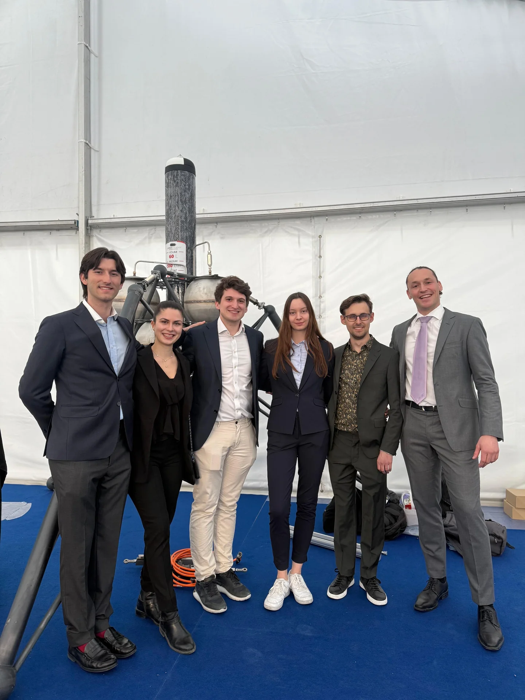
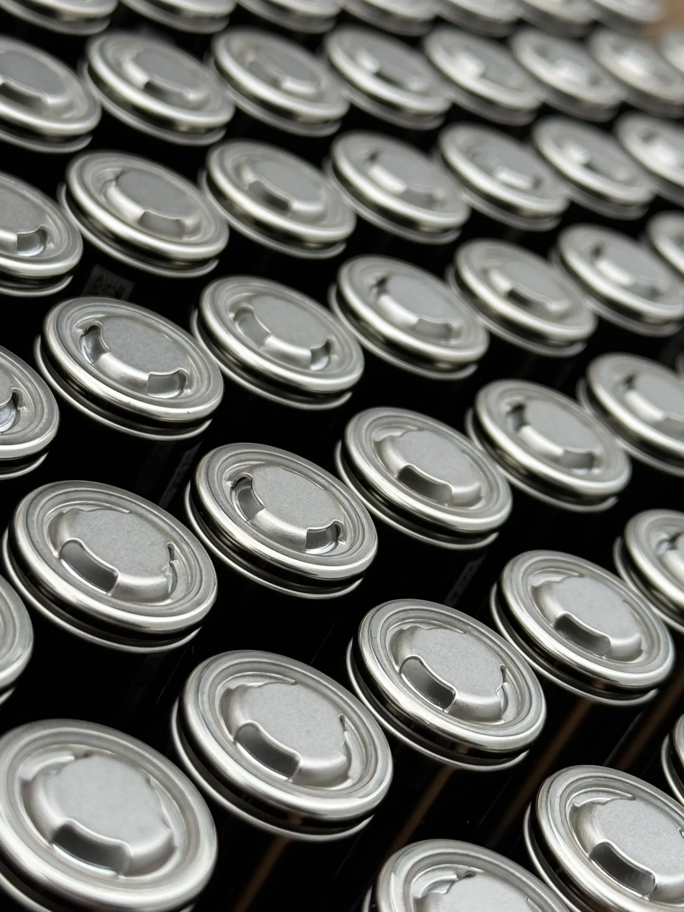
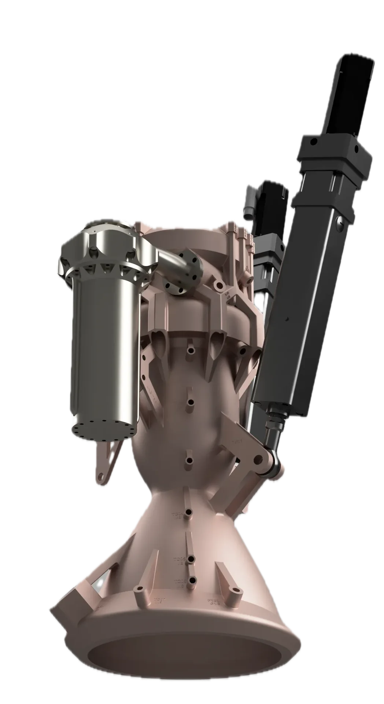
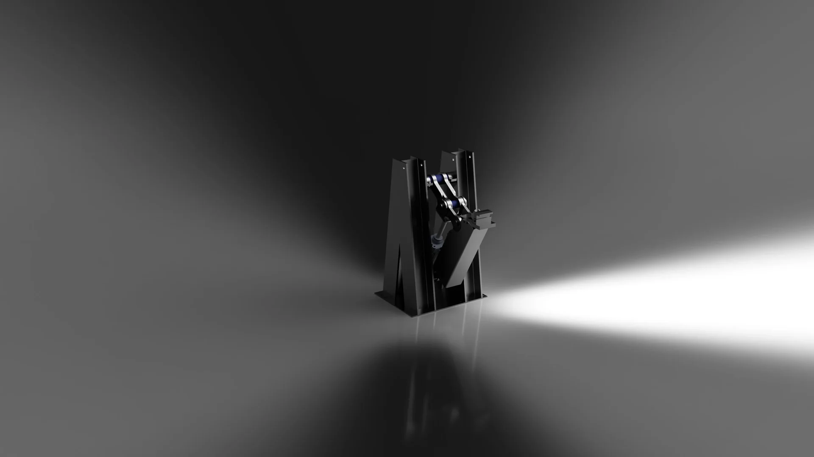

Elara Aerospace / Our work
People, hardware,
and flight.
Explore the vehicles, systems, and people building reusable spaceflight in Europe.






Elara Aerospace / Our work
Explore the vehicles, systems, and people building reusable spaceflight in Europe.



